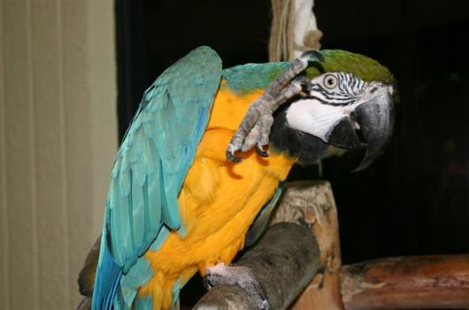
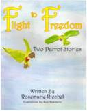

With a little help from her friends
The following links lead to studies of "animals using human language," experiments with interspecies
communication, and parrot-related sites.
The following links lead to studies of "animals using human language," experiments with interspecies
communication, and parrot-related sites.
LINKS ABOUT WRITING
The author is a member of a writers' group in Florida. If you are interested in writing or wish to explore
interests related to the group, it is called PINAWOR (Pinellas Authors and Writers Organization Inc.). For
more information visit their web site at: • www.pinawor.org
MY PARROT WRITER FRIEND
The author is a member of a writers' group in Florida. If you are interested in writing or wish to explore
interests related to the group, it is called PINAWOR (Pinellas Authors and Writers Organization Inc.). For
more information visit their web site at: • www.pinawor.org
MY PARROT WRITER FRIEND
«-
You are here: Related Links
|
Arielle said, "I want out!" |
|
Arielle can be a demanding bird. She says what one might expect from a bird in this position, click the play button to hear her speak. ( Click here to play if buttons missing above . ) The transcription is in the yellow box below. |
|
Arielle understands speech and speaks thoughtfully using English words, phrases, and sentences. |

Photo by Linda Carpenter
Related Links


Pet Guardian Angels of America
(www.pgaa.com) is an animal rescue organization. The
PGAA site features a couple of my articles below.
Article 1: "Recording Speech by Birds" http://www.pgaa.com/avain/general/daltonrecordingbirds.html
Article 2: "Talking Birds, Intelligent Creatures" http://www.pgaa.com/avain/general/daltontalkingbird.html
PGAA site features a couple of my articles below.
Article 1: "Recording Speech by Birds" http://www.pgaa.com/avain/general/daltonrecordingbirds.html
Article 2: "Talking Birds, Intelligent Creatures" http://www.pgaa.com/avain/general/daltontalkingbird.html
LINK ABOUT APES
This link takes you to the site for the language-using gorilla, Koko at The Gorilla Organization
• www.gorilla.org
This link takes you to the site for the language-using gorilla, Koko at The Gorilla Organization
• www.gorilla.org
LINK ABOUT WHALES & DOLPHINS:
This site is mainly about cetaceans, but it also deals with a variety of subjects related to interspecies
communication. [Interspecies Inc., Friday Harbor, WA] Go to the interspecies site www.interspecies.com
Article about Arielle:
Knollman, James. "Slow Dreaming." Interspecies , Winter 2004.
This site is mainly about cetaceans, but it also deals with a variety of subjects related to interspecies
communication. [Interspecies Inc., Friday Harbor, WA] Go to the interspecies site www.interspecies.com
Article about Arielle:
Knollman, James. "Slow Dreaming." Interspecies , Winter 2004.
LINKS ABOUT KEEPING & TRAINING PET BIRDS:
American Federation of Aviculture American Federation of Aviculture • www.afabirds.org
An extensive web site with information about parrots including the owner's Grey parrot, Kibibi, is at
www.infosuperflyway.com
My article "Recording Speech by Birds" is found on the Kibibi site at
http://www.infosuperflyway.com/articles/recording-birds.php
Another site about parrots is imabird.com . You can check out information about my book, Another
Kind of Mind: A Talking Bird Masters English, on Barry's web site at ... Www.Imabird.
com/bear/node/420
American Federation of Aviculture American Federation of Aviculture • www.afabirds.org
An extensive web site with information about parrots including the owner's Grey parrot, Kibibi, is at
www.infosuperflyway.com
My article "Recording Speech by Birds" is found on the Kibibi site at
http://www.infosuperflyway.com/articles/recording-birds.php
Another site about parrots is imabird.com . You can check out information about my book, Another
Kind of Mind: A Talking Bird Masters English, on Barry's web site at ... Www.Imabird.
com/bear/node/420
Don't overlook local bird clubs for information. Check your local newspaper for
information. If the clubs are not printed regularly, you might try a telephone call
to the clubs editor for the most up-to-date information. You can search on the Internet
too.
If you're interested in companion birds, including parrots and other talking birds, use
the links above are a starting point. If you know of a related link that is not included
here, feel free to suggest additions by e-mail.
If you are interested in speech by talking birds, below are the details about the
ParrotSpeech Group:
Description
People interested in the study of spontaneous speech by talking birds. The topics of
concern include learning theory, speech recognition, recording speech, cognitive
speech by talking birds, linguistics, conversations with parrot-like birds, cognition,
consciousness, and other topics related to the talking birds. To join click on the
subscription link or paste the following link into your browser:
ParrotSpeech-subscribe@yahoogroups.com
ParrotSpeech Group:
Description
People interested in the study of spontaneous speech by talking birds. The topics of
concern include learning theory, speech recognition, recording speech, cognitive
speech by talking birds, linguistics, conversations with parrot-like birds, cognition,
consciousness, and other topics related to the talking birds. To join click on the
subscription link or paste the following link into your browser:
ParrotSpeech-subscribe@yahoogroups.com

TV LINKS ABOUT ARIELLE
Humorous interview
http://www.studio10.tv/category/authors/segment.aspx/84258/Another_Kind_of_Mind
C lick here to see v ideo clip
Interview about speech research./cognitive speech. The most recent clip from
WTVT-13, Tampa 29 September 2010 Arielle on TV ... Hear Her Speak
Radio host John Austin and the author discuss the book ANOTHER KIND OF MIND: A
Talking Bird Masters English
http://www.internetradiopros.com/bookclub/?p=episode&name=2012-10- 18_zbookclub_for_102312_2nd_segment_michael_dalton.mp3
Humorous interview
http://www.studio10.tv/category/authors/segment.aspx/84258/Another_Kind_of_Mind
C lick here to see v ideo clip
Interview about speech research./cognitive speech. The most recent clip from
WTVT-13, Tampa 29 September 2010 Arielle on TV ... Hear Her Speak
Radio host John Austin and the author discuss the book ANOTHER KIND OF MIND: A
Talking Bird Masters English
http://www.internetradiopros.com/bookclub/?p=episode&name=2012-10- 18_zbookclub_for_102312_2nd_segment_michael_dalton.mp3
Two Parrot Stories, a children's picture book (age 6 and up), or in
reading articles about parrots in history, or about speech and body
language, please visit the author's website at
www.rosemarieriechelbooks.com
reading articles about parrots in history, or about speech and body
language, please visit the author's website at
www.rosemarieriechelbooks.com